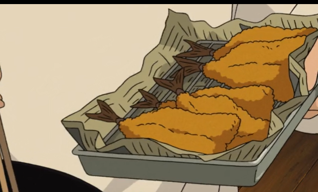

No one can resist a super-crispy street food treat from the Spirit Realm.✨
You can use a wide range of fresh ingredients, but the most popular options include seafood (shrimp, calamari heads, scallops, slices of whitefish), root vegetables (sweet potato, lotus root, onion) and mushrooms. The recipe below has my favorite meat-and-vegetable selection. Yield: 3 to 4 servings Prep time: 12 minutes Cook time: 20 minutes
Tempura Filling
1 cup tiger shrimp, tails on
½ cup green beans
1 medium eggplant, sliced
1 red bell pepper, julienned
Teriyaki Sauce
2 tbsp mirin
4 tbsp soy sauce
1 tsp brown sugar
2 tbsp sake (optional)
¼ tsp sesame oil
¼ tsp sesame seeds
Wasabi Soy Sauce
½ tsp wasabi
2 tbsp mirin
2 tbsp soy sauce
½ tsp brown sugar
Tempura Batter
1 cup flour
¼ cup cornstarch + extra for dusting
1 egg
1 cup chilled soda water
4–6 ice cubes
Neutral oil for frying
Kosher salt, to taste
½ lemon, sliced

🍤 Crispy bites perfect for any spirit or human visitor!
Instructions
Score deep cuts underneath each shrimp (about halfway through the shrimp but not cutting all the way through) as this will prevent them from curling when frying.
Combine all the ingredients for the teriyaki dipping sauce into a bowl and mix until the sugar has dissolved. Set aside.
In a separate bowl, mix all the wasabi soy dipping sauce ingredients. Set aside.
To make the tempura batter, mix the flour and cornstarch in a bowl until well combined.
Make a well in the center, and crack your egg into it. Add the soda or sparkling water to the well. Using a pair of chopsticks, stir the mixture until the batter is just combined but still lumpy.
Add the ice cubes to the batter and place it in the fridge to chill for at least 5 minutes.
Heat your oil in a heavy pot or wok.
Lightly dust your shrimp and assortment of vegetables in a bit of cornstarch.
Once the oil has reached a temperature of 350°F, gently dip your shrimp and vegetables in the chilled tempura batter and place them in the oil. Fry until a crispy outer shell forms around the ingredients and the shrimp has turned pink. This should take 2 minutes. Try not to overcrowd the pot or wok, and fry in batches. For an extra-crispy shell, add 1 to 2 tablespoons of tempura batter on top of the tempura prawns and vegetables while frying.
Place the tempura on a wire rack and, while it is still hot, sprinkle it with kosher salt to taste.
Serve immediately on a large platter with the 2 dipping sauces in mini sauce dishes and slices of lemon around the tempura, then dig in. The tempura is also great with some fried shrimp-flavored chips, which can be found at your local Asian grocery store. You can fry these in the same oil as your tempura.
Tips
Tempura tastes best served fresh and hot!
Save crumbs (tenkasu) for topping okonomiyaki or takoyaki.
Mix batter with chopsticks to avoid overmixing.
Try curry powder dusting after frying for a twist!